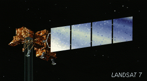
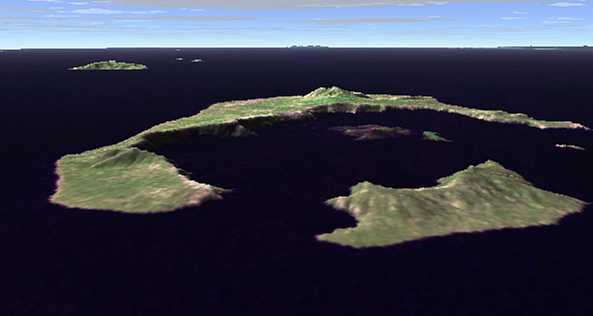
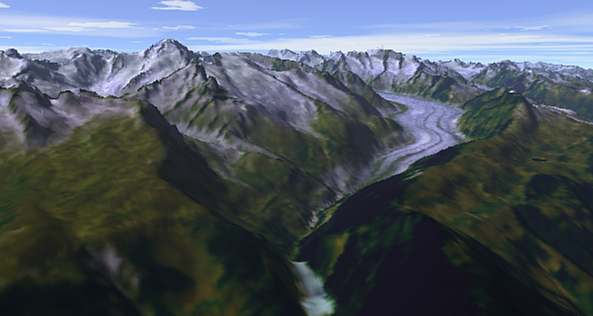
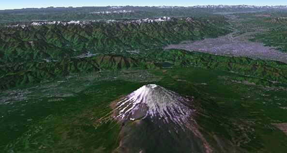
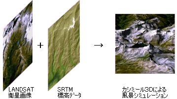
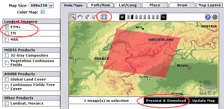
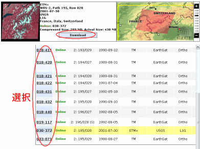

LANDSAT衛星画像のカシミール3Dでの利用方法
Home > Software > ソフトウエア開発・サーバ管理のメモ帳 > このページ
Created on 2002/04, Last Update

アメリカ合衆国の科学衛星「ランドサット（LANDSAT）」が高度700Kmから撮影した解像度30mの画像データが公開されています。この画像データと標高データ（SRTMまたはGTOPO30）をカシミール3Dという風景シミュレーターを用いて、旅先の風景を再現するための方法を説明します。
シミュレーションの結果をまずご覧ください

サントリーニ島（スィラ島）、ギリシア

アレッチ氷河とユングフラウ付近の山々、スイス

富士山、日本
風景シミュレーションの概念

LANDSAT衛星画像を標高データの上に貼り付けて（マッピングして）実際の風景をシミュレートします。
利用ソフト (Windows)
- カシミール3D （地図ブラウザ、風景CG作成のためのフリーソフトウエア） http://www.kashmir3d.com/
- ランドサット衛星画像（TM, ETM+ 専用） カシミール3D用プラグイン http://www.kashmir3d.com/landsat/
- スペースシャトル・レーダー（SRTM） カシミール3D用プラグイン http://www.kashmir3d.com/srtm/
利用するデータ
- ランドサット衛星画像（Global Land Cover Facility : Earth Science Data Interface ：ESDI）http://glcfapp.umiacs.umd.edu:8080/esdi/index.jsp
- スペースシャトル・レーダー地形データ : SRTM ftp://edcsgs9.cr.usgs.gov/pub/data/srtm/
- GTOPO30 DEMデータ http://edcdaac.usgs.gov/gtopo30/gtopo30.asp
ダウンロード方法の簡単な説明
ランドサット衛星画像
（１）メニュー「MAP SEARCH」をクリック

（２）左側ペインの「ETM+」と「TM」のチエックボックスをチェック
（３）地図上のターゲット ポイントをクリックし拡大
（４）地図ウインドウ情報にあるツール（ルーペや拡大縮小など）の「四角枠の選択ツール」をクリック
（５）地図下に「Preview & Download」と表示されるので、そこクリック
（６）データセットのID番号をクリックするとプレビューエリアに縮小画像とターゲット地図が表示される

スペースシャトル・レーダー地形データ SRTM
（１）上記ftpサイトにアクセスする
（２）大陸・地区のディレクトリを選択
（３）緯度、経度のファイル名となっているので必要箇所をダウンロード
※ ターゲットの緯度、経度はあらかじめGTOPO30などで調べておくと便利
※注意事項
ダウンロード高速化ツールなど同時ダウンロードするとブラックリストに載るようです。１個ずつおとなしくダウンロードしましょう。
ランドサット衛星データの説明
TMセンサー Thematic Mapper （LANDSAT 4号、5号）
| SENSOR | SPECTRAL RANGE (μm) | Resolution (m) |
| Band 1 | 0.45～0.52 （青） | 30 |
| Band 2 | 0.52～0.6 （緑） | 30 |
| Band 3 | 0.63～0.69 （赤） | 30 |
| Band 4 | 0.76～0.9 （近赤外） | 30 |
| Band 5 | 1.55～1.75 （近赤外） | 30 |
| Band 6 | 10.4～12.5 （遠赤外） | 120 |
| Band 7 | 2.08～2.35 （中間赤外） | 30 |
ETMセンサー Enhanced Thematic Mapper （LANDSAT 6号）
ETM+センサー Enhanced Thematic Mapper Plus （LANDSAT 7号）
| SENSOR | SPECTRAL RANGE (μm) | Resolution (m) |
| Band 1 | 0.45～0.515 （青） | 30 |
| Band 2 | 0.525～0.605 （緑） | 30 |
| Band 3 | 0.63～0.69 （赤） | 30 |
| Band 4 | 0.75～0.9 （近赤外） | 30 |
| Band 5 | 1.55～1.75 （近赤外） | 30 |
| Band 6 | 10.4～12.5 （遠赤外） | 60 |
| Band 7 | 2.09～2.35 （中間赤外） | 30 |
必要なデータだけダウンロードしてもいいのですが、フルセットでダウンロードしておくことをオススメします。
具体的な使い方
■ ランドサットデータの準備
（１）ダウンロードしたランドサットデータの存在するフォルダをエクスプローラなどで開きます
（２）*.met.txt と拡張子に余分な「.txt」が付いているものをはずします。（IEなどでダウンロードした場合）
（３）圧縮ファイル（.gz）を解凍します。
■ SRTM（スペースシャトル・レーダー地形データ）の準備
（１）ダウンロードしたファイル（*.hgt.zip）を解凍します
（２）適当なフォルダを作り、地図として表示したい範囲のデータファイルを格納します
※ 同一フォルダの中のデータファイルは自動的に結合されてカシミール3Dで表示されます
■カシミール3Dでの準備
※ ランドサット用プラグイン、SRTM用プラグインはあらかじめ組み込んでおく
（１）「ツール」 － 「ランドサット衛星画像」 － 「ランドサット衛星画像の変換」をクリック
（２）ランドサットデータの存在するフォルダのメタファイル（たいていの場合 *.met）を選択
（３）変換後のXEMファイルを保存するフォルダを選択して、変換開始
※ データ変換後、必要なファイルは *.xem のみです。ダウンロードしたランドサットデータは消去可能
計算中 ～ ワークステーションのスピードにより違いますが、30分程度は掛かります
（４）変換完了。変換した画像データを開きます。地図の位置がでたらめな位置（大抵は北緯0度、東経0度）になっているので、データの存在する範囲までジャンプする
（５）「編集」 － 「標高データを重ねる」 をクリック。SRTMデータの存在するフォルダの適当な *.hgt ファイルを選択
標高データを持った衛星画像地図が画面に表示される
■ カシミール3Dでの風景CG（シミュレーション）作成
（１）任意の視点位置で「カシバード」起動
（２）「風景の設定」 － 「マッピング」で自動的にマッピングするを必ず選択。そのほかのオプションは任意で...
（３）「設定」 － 「プレビュー（Direct3D設定）」で、「テクスチャ機能を使用する」をOFF
※ 私の常用環境下で「テクスチャ機能 ON」で DirectX プレビューするとプログラムが落ちました。巨大テクスチャを貼ることはできないのでしょう...
アメリカの納税者に感謝しつつ、衛星画像によるシミュレーションを楽しみます...